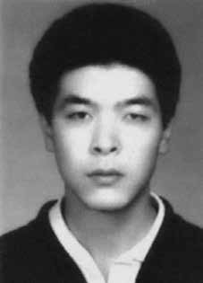

Francisco
Seiko
Okama
CIRCUNSTÂNCIAS DA MORTE
Francisco Seiko Okama foi morto em 15 de março de 1973, em São Paulo (SP) na chamada emboscada da Rua Caquito, juntamente com Arnaldo Cardoso Rocha e Francisco Emanoel Penteado. Na ocasião, todos eram militantes da Ação Libertadora Nacional (ALN).
A versão oficial sobre o caso, sustentada pelos órgãos de imprensa à época e presente na documentação emitida, alegava que os militantes foram abordados por uma patrulha na referida rua e entraram em confronto por reação a suposta voz de prisão. Dois deles teriam morrido na mesma rua do incidente e outro conseguido fugir, no entanto, foi morto próximo ao local. A requisição de exame de necropsia encaminhado pelo DOPS ao Instituto Médico Legal (IML) atesta que Francisco Seiko faleceu às 14h do dia 15 de março, ao travar tiroteio com agentes dos órgãos de Segurança Nacional.
Segundo o laudo produzido pelo IML na ocasião, a vítima teria falecido em virtude de choque traumático por politraumatismo, produzido por perfuro contundente feito com projétil de arma de fogo. Na ocasião, não foi realizada nenhuma perícia no local da ocorrência, o que dificultou um parecer mais conclusivo que contestasse a versão oficial. Não foi também realizada perícia na arma encontrada em posse de Francisco Okama, que só foi formalmente apreendida no dia 19 de março, quatro dias após o acontecimento. Em meados da década de 1980, Iara Xavier Pereira, esposa de Arnaldo Cardoso Rocha, e Suzana Keniger Lisbôa estiveram na Rua Caquito, suposto local do crime, para busca de novas informações sobre o caso.
Conversando com alguns moradores da rua, souberam que dois meninos teriam assistido ao ocorrido e conseguiram localizar um deles, que relatou em detalhes o que viu enquanto andava de bicicleta com um amigo. Segundo eles, “[…] um rapaz moreno corria rua abaixo e, após cambalear, dobrara as pernas e caíra de bruços, quase em sua frente”. Ao tombar, foi imediatamente colocado no banco traseiro de um Volkswagen verde, ao lado de uma mulher com uma mecha de cabelos brancos, uma agente não identificada, mas que, segundo um testemunho, havia participado de outras operações de agentes do DOI-CODI/SP.
Cumpre destacar informação constante no CEMDP, que Arnaldo já tinha relatado aos companheiros que em outras ocasiões nas quais conseguiu escapar da perseguição dos agentes de segurança, estava presente uma mulher com uma mecha de cabelos brancos, semelhante à descrita pelo menino que testemunhou sua prisão. Pela descrição, pode-se evidenciar que a pessoa que vira cair era Arnaldo Cardoso Rocha.
Uma informação divulgada dezenove anos depois veio por meio das matérias publicadas pela revista Veja (veiculadas em 20 de maio e em 18 de novembro de 1992), com base em depoimento do ex-agente do DOI-CODI/SP, Marival Chaves do Canto, que revelou como atuavam os infiltrados nas organizações clandestinas durante a ditadura, chamados de “cachorros”, que eram indivíduos que faziam parte da resistência, mas que, por diversas razões, passaram a colaborar com os órgãos da repressão, até com direito a salário e, em alguns casos, com contrato de trabalho.
Encapuzados, alguns chegaram a interrogar colegas da mesma organização. De acordo com as citadas reportagens da revista Veja, entretanto, Jota teria iniciado sua atuação como agente infiltrado no fim de 1972, sem, contudo, apresentar comprovação a respeito dessa informação. Em 2 de março de 1973, Arnaldo escapou de uma perseguição, ferido na perna, e o fato foi noticiado como um tiroteio envolvendo traficantes, conforme relatou o jornal Folha da Tarde, de 16 de março de 1973. Nesse dia, ele havia acabado de ter um encontro com Jota, evidenciando que o encontro dos órgãos de repressão política com os três militantes não foi casual, conforme a versão oficial.
Não foi realizada perícia de local, apesar da referência a um intenso tiroteio, e não foram localizadas fotos dos corpos dos militantes. Há indicativos, portanto, de que houve a intenção de executar os militantes, valendo acrescentar que no parecer da CEMDP foram registradas outras fragilidades da versão dos órgãos da repressão, como “[…] as armas que teriam sido encontradas em poder dos militantes só foram formalmente apreendidas pela autoridade militar em 19 de março, quatro dias depois, e não há notícia de que tenham sido submetidas a exame pericial”.
Em depoimento, Amílcar Baiardi, preso no DOI-CODI/SP na época, afirmou que viu, pela janela, à distância, dois jovens feridos jogados na quadra de esportes daquele órgão da repressão, aparentemente sendo interrogados em meio a comemorações ruidosas dos agentes. Ali foram deixados por mais de uma hora, até serem recolhidos por um rabecão do IML. Amílcar calcula que os viu depois do meio-dia e ainda estavam com vida. Um tinha traços orientais e era chamado pelos agentes de “japonês”. Quando foi libertado, Amílcar teve acesso aos jornais e associou o fato à morte dos três militantes da ALN.
O relato de Amílcar foi importante para refutar a versão oficial de que as vítimas teriam sido mortas no local do incidente. Segundo esta nova versão que se descortinava, pelo menos dois dos envolvidos teriam sido conduzidos ao DOI-CODI e não diretamente ao IML, sendo interrogados e possivelmente torturados. Amílcar é claro também em afirmar que teria verificado que as vítimas apresentavam na ocasião apenas ferimentos torácicos/abdominais, não mencionando nenhum ferimento na cabeça.
Já o laudo de necropsia citado anteriormente descreve que Francisco Seiko foi alvejado com cinco tiros. Um, com entrada do projétil no canto externo da pálpebra inferior esquerda, que chegou a transfixar o olho esquerdo e outro com orifício de entrada na ponta do nariz, provocando fratura do maxilar superior direito. Pelo menos três deles teriam sido desferidos de cima para baixo, indicando uma situação em que a vítima já estaria em situação de completo domínio. Versão que vai ao encontro das informações levantas pela análise pericial realizada pela CNV no laudo do Exame Necroscópico e exame de antropologia forense de Arnaldo Cardoso Rocha.
No corpo deste, foi constatado a existência de mais de 30 achados, ou seja, marcas, escoriações e equimoses que não foram relatadas a época. Mais grave é que, dentre os achados descritos no Laudo de Necropsia, não constam duas feridas produzidas por entradas de projeteis expelidos por arma(s) de fogo, localizadas na região parietal esquerda de Arnaldo Cardoso Rocha, sendo que outros dois atingiram sua cabeça e outra ainda a clavícula direita, que poderiam caracterizar evento compatível com execução.
Junta-se a esta tese a simetria das feridas encontradas no corpo de Arnaldo, indicando que o mesmo foi vítima de intensa tortura, nomeadamente a conhecida por “falanga”, na qual a pessoa torturada recebe reiterados golpes nos pés e nas mãos produzidos por barras de ferro, cassetetes ou outros congêneres. Maria José Mendes de Almeida Araújo afirmou em depoimento anexado ao processo da CEMDP que, em visita ao IML no dia 16 de março daquele ano, teria encontrado Francisco com o rosto bastante machucado e com a dentição quebrada. Visíveis traços de que teria sido torturado e levado alguns tiros de curta distância ou a queima roupa.
Não há registro de fotos das vítimas para se confrontar as versões do laudo e/ou dos depoimentos, uma vez que não foi realizada perícia no local. Os militantes teriam sido entregues ao Instituto Médico-Legal sem calças, o que aponta que entre o tiroteio e a sua chegada ao IML passaram por algum lugar, provavelmente pelo DOI-CODI, conforme depoimento de Amílcar Baiardi. O relator do caso na CEMDP, Luiz Francisco Carvalho, ainda acrescenta que nas notícias de jornais os três são identificados pelos seus codinomes, enquanto no registro do IML há o nome verdadeiro, o que leva a crer que os órgãos de segurança monitoravam e tinham todas as informações pertinentes sobre os três militantes.
O caso foi descrito como “nebuloso” pelo ex-escrivão Manoel Aurélio Lopes, que atuava no DOI-CODI-SP e na ocasião elaborou os autos de apreensão das armas e documentos em posse dos militantes. Em depoimento prestado à audiência pública da Comissão Nacional da Verdade, em parceria com a Comissão Estadual da Verdade Rubens Paiva, no dia 25 de fevereiro de 2014, Manoel comentou que este caso fora na época cercado por divergências nas investigações, com muitas versões desencontradas. Manoel admitiu ter havido torturas no DOPS/SP e no DOI-CODI no período em que atuara.
Na ocasião, a CNV apresentou também laudo pericial de exumação do corpo de Arnaldo Cardoso Rocha, desconstruindo definitivamente a versão oficial da morte em tiroteio. Os corpos dos três militantes foram entregues aos familiares em caixões lacrados, com ordens expressas para não serem abertos.
Francisco foi enterrado por seus pais no cemitério de Mauá (SP).
Francisco Seiko Okama was killed on March 15, 1973, in São Paulo (SP) in the so-called Caquito Street ambush, together with Arnaldo Cardoso Rocha and Francisco Emanoel Penteado. At the time, they were all militants of Ação Libertadora Nacional (ALN).
The official version of the case, supported by the press at the time and present in the documentation issued, claimed that the militants were approached by a patrol on that street and clashed as a reaction to the supposed voice of arrest. Two of them reportedly died on the same street as the incident and another managed to escape, however, he was killed close to the scene. The request for an autopsy examination sent by the DOPS to the Forensic Medical Institute (IML) attests that Francisco Seiko died at 2pm on March 15th, during a shootout with agents from the National Security agencies.
According to the report produced by the IML at the time, the victim died as a result of traumatic shock due to polytrauma, caused by a blunt puncture made with a firearm projectile. At the time, no examination was carried out at the scene of the incident, which made it difficult to provide a more conclusive opinion that would challenge the official version. An examination was also not carried out on the weapon found in the possession of Francisco Okama, which was only formally seized on March 19, four days after the event. In the mid-1980s, Iara Xavier Pereira, wife of Arnaldo Cardoso Rocha, and Suzana Keniger Lisbôa were on Rua Caquito, the alleged crime scene, to search for new information about the case.
Talking to some residents on the street, they learned that two boys had witnessed what happened and managed to locate one of them, who reported in detail what he saw while riding a bike with a friend. According to them, “[…] a dark-skinned boy was running down the street and, after staggering, he bent his legs and fell face down, almost in front of him”. When he fell, he was immediately placed in the back seat of a green Volkswagen, next to a woman with a mop of white hair, an unidentified agent, but who, according to testimony, had participated in other DOI-CODI/SP agent operations.
It is worth highlighting information contained in the CEMDP, that Arnaldo had already reported to his companions that on other occasions in which he managed to escape persecution from security agents, a woman was present with a lock of white hair, similar to that described by the boy who witnessed his arrest. From the description, it can be seen that the person he saw falling was Arnaldo Cardoso Rocha.
Information released nineteen years later came through articles published by Veja magazine (published on May 20 and November 18, 1992), based on testimony from former DOI-CODI/SP agent, Marival Chaves do Canto, who revealed how infiltrators worked in clandestine organizations during the dictatorship, called “dogs”, who were individuals who were part of the resistance, but who, for various reasons, began to collaborate with repressive bodies, even with the right to a salary and, in some cases, an employment contract.
Hooded, some even interrogated colleagues from the same organization. According to the aforementioned Veja magazine reports, however, Jota would have started working as an undercover agent at the end of 1972, without, however, providing proof regarding this information. On March 2, 1973, Arnaldo escaped a chase, injured in the leg, and the incident was reported as a shootout involving drug dealers, as reported by the newspaper Folha da Tarde, on March 16, 1973. On that day, he had just had a meeting with Jota, showing that the meeting between political repression bodies and the three militants was not casual, according to the official version.
No site investigation was carried out, despite the reference to intense shooting, and no photos of the militants' bodies were located. There are indications, therefore, that there was an intention to execute the militants, and it is worth adding that in the CEMDP opinion, other weaknesses in the repression bodies' version were recorded, such as “[…] the weapons that would have been found in the militants' possession were only formally seized by the military authority on March 19, four days later, and there is no news that they were subjected to expert examination”.
In testimony, Amílcar Baiardi, arrested at DOI-CODI/SP at the time, stated that he saw, through the window, from a distance, two injured young people thrown onto the sports court of that repression body, apparently being interrogated amid noisy celebrations by the agents. They were left there for more than an hour, until they were picked up by an IML hearse. Amílcar estimates that he saw them after noon and they were still alive. One had oriental features and was called “Japanese” by the agents. When he was released, Amílcar had access to the newspapers and associated the fact with the death of the three ALN militants.
Amílcar's report was important in refuting the official version that the victims had been killed at the scene of the incident. According to this new version that was emerging, at least two of those involved would have been taken to DOI-CODI and not directly to the IML, being interrogated and possibly tortured. Amílcar is also clear in stating that he found that the victims only had chest/abdominal injuries at the time, not mentioning any head injuries.
The autopsy report mentioned above describes that Francisco Seiko was shot with five shots. One, with the projectile entering the outer corner of the lower left eyelid, which transfixed the left eye and another with an entry hole on the tip of the nose, causing a fracture of the upper right jaw. At least three of them would have been fired from above, indicating a situation in which the victim would already be in complete control. Version that meets the information gathered by the expert analysis carried out by the CNV in the Necroscopic Examination report and forensic anthropology examination of Arnaldo Cardoso Rocha.
On his body, there were more than 30 findings, that is, marks, abrasions and bruises that were not reported at the time. More serious is that, among the findings described in the Necropsy Report, there are no two wounds produced by projectiles expelled by firearm(s), located in the left parietal region of Arnaldo Cardoso Rocha, with two others hitting his head and another hitting his right clavicle, which could characterize an event compatible with execution.
Added to this thesis is the symmetry of the wounds found on Arnaldo's body, indicating that he was a victim of intense torture, namely that known as “falanga”, in which the tortured person receives repeated blows to the feet and hands caused by iron bars, batons or other similar elements. Maria José Mendes de Almeida Araújo stated in a statement attached to the CEMDP process that, on a visit to the IML on March 16 of that year, she found Francisco with a badly bruised face and broken teeth. Visible signs that he had been tortured and shot at close range or at close range.
There is no record of photos of the victims to compare the versions of the report and/or statements, since no forensic examination was carried out at the scene. The militants would have been handed over to the Medical-Legal Institute without pants, which indicates that between the shooting and their arrival at the IML they passed through somewhere, probably DOI-CODI, according to Amílcar Baiardi's testimony. The case's rapporteur at CEMDP, Luiz Francisco Carvalho, also adds that in newspaper reports the three are identified by their code names, while in the IML record there is their real name, which leads us to believe that the security agencies monitored and had all the pertinent information about the three militants.
The case was described as “nebulous” by former clerk Manoel Aurélio Lopes, who worked at DOI-CODI-SP and at the time prepared the records of seizure of the weapons and documents in the militants' possession. In a statement given at the public hearing of the National Truth Commission, in partnership with the Rubens Paiva State Truth Commission, on February 25, 2014, Manoel commented that this case was at the time surrounded by divergences in the investigations, with many versions conflicting. Manoel admitted that there had been torture at DOPS/SP and DOI-CODI during the period in which he worked.
On that occasion, the CNV also presented an expert report on the exhumation of Arnaldo Cardoso Rocha's body, definitively deconstructing the official version of the shooting death. The bodies of the three militants were handed over to their families in sealed coffins, with express orders not to open them.
Francisco was buried by his parents in the Mauá cemetery (SP).
Francisco Seiko Okama fue asesinado el 15 de marzo de 1973, en São Paulo (SP), en la llamada emboscada de la calle Caquito, junto con Arnaldo Cardoso Rocha y Francisco Emanoel Penteado. En ese momento, todos eran militantes de la Ação Libertadora Nacional (ALN).
La versión oficial del caso, apoyada por la prensa de la época y presente en la documentación emitida, afirmaba que los militantes fueron abordados por una patrulla en esa calle y se enfrentaron como reacción a la supuesta voz de detención. Dos de ellos habrían muerto en la misma calle del incidente y otro logró escapar, sin embargo, fue asesinado cerca del lugar. La solicitud de autopsia enviada por el DOPS al Instituto Médico Forense (IML) da fe de que Francisco Seiko murió a las 14 horas del 15 de marzo, durante un tiroteo con agentes de los organismos de Seguridad Nacional.
Según el informe elaborado por el IML en su momento, la víctima falleció como consecuencia de un shock traumático por politraumatismo, provocado por un pinchazo contundente realizado con un proyectil de arma de fuego. En aquel momento no se llevó a cabo ningún examen en el lugar del incidente, lo que dificultó dar una opinión más concluyente que cuestionara la versión oficial. Tampoco se realizó un examen al arma encontrada en posesión de Francisco Okama, que recién fue incautada formalmente el 19 de marzo, cuatro días después del hecho. A mediados de la década de 1980, Iara Xavier Pereira, esposa de Arnaldo Cardoso Rocha, y Suzana Keniger Lisbôa se encontraban en la Rua Caquito, la escena del presunto crimen, en busca de nueva información sobre el caso.
Conversando con algunos vecinos en la calle, supieron que dos chicos habían presenciado lo sucedido y lograron localizar a uno de ellos, quien contó detalladamente lo que vio mientras andaba en bicicleta con un amigo. Según ellos, “[…] un niño moreno corría por la calle y, tras tambalearse, dobló las piernas y cayó boca abajo, casi frente a él”. Al caer, fue inmediatamente colocado en el asiento trasero de un Volkswagen verde, al lado de una mujer de cabello blanco, agente no identificado, pero que, según testimonio, había participado en otras operaciones de agentes del DOI-CODI/SP.
Cabe destacar información contenida en el CEMDP, que Arnaldo ya había informado a sus compañeros que en otras ocasiones en las que logró escapar de la persecución de agentes de seguridad, se encontraba presente una mujer con un mechón de cabello blanco, similar al descrito por el niño que presenció su detención. De la descripción se desprende que quien vio caer fue Arnaldo Cardoso Rocha.
La información difundida diecinueve años después surgió a través de artículos publicados en la revista Veja (publicados el 20 de mayo y el 18 de noviembre de 1992), basados en el testimonio del ex agente del DOI-CODI/SP, Marival Chaves do Canto, quien reveló cómo en organizaciones clandestinas durante la dictadura trabajaban infiltrados, llamados “perros”, que eran individuos que formaban parte de la resistencia, pero que, por diversas razones, comenzaron a colaborar con organismos represivos, incluso con derecho a un salario y, en algunos casos, casos, un contrato de trabajo.
Encapuchados, algunos incluso interrogaron a colegas de la misma organización. Sin embargo, según la citada revista Veja, Jota habría comenzado a trabajar como agente encubierto a finales de 1972, aunque sin aportar pruebas sobre esta información. El 2 de marzo de 1973, Arnaldo escapó de una persecución, herido en una pierna, y el incidente fue reportado como un tiroteo entre narcotraficantes, según informó el diario Folha da Tarde, el 16 de marzo de 1973. Ese día, acababa de reunirse con Jota, demostrando que el encuentro entre los órganos de represión política y los tres militantes no fue casual, según la versión oficial.
No se llevó a cabo ninguna investigación del lugar, a pesar de la referencia a intensos tiroteos, y no se encontraron fotografías de los cuerpos de los militantes. Hay indicios, por tanto, de que hubo intención de ejecutar a los militantes, y vale agregar que en el dictamen del CEMDP se registraron otras debilidades en la versión de los órganos de represión, como que “[…] las armas que habrían sido encontradas en posesión de los militantes fueron incautadas formalmente por la autoridad militar recién el 19 de marzo, cuatro días después, y no hay noticias de que hayan sido sometidas a peritaje”.
En su testimonio, Amílcar Baiardi, detenido en ese momento en el DOI-CODI/SP, afirmó haber visto, a través de la ventana, desde lejos, a dos jóvenes heridos arrojados a la cancha deportiva de ese organismo de represión, aparentemente siendo interrogados en medio de ruidosas celebraciones por parte de los agentes. Allí permanecieron más de una hora, hasta que fueron recogidos por un coche fúnebre del IML. Amílcar estima que los vio pasado el mediodía y todavía estaban vivos. Uno tenía rasgos orientales y los agentes lo llamaban “japonés”. Cuando fue liberado, Amílcar tuvo acceso a los periódicos y asoció el hecho con la muerte de los tres militantes de la ALN.
El informe de Amílcar fue importante para refutar la versión oficial de que las víctimas habían sido asesinadas en el lugar del incidente. Según esta nueva versión que iba surgiendo, al menos dos de los involucrados habrían sido llevados al DOI-CODI y no directamente al IML, siendo interrogados y posiblemente torturados. Amílcar también es claro al afirmar que encontró que las víctimas en ese momento solo tenían lesiones en el pecho/abdominal, sin mencionar ninguna lesión en la cabeza.
El informe de la autopsia mencionado anteriormente describe que Francisco Seiko recibió cinco disparos. Uno, con el proyectil entrando por la esquina exterior del párpado inferior izquierdo, que traspasó el ojo izquierdo y otro con un orificio de entrada en la punta de la nariz, provocando una fractura de la mandíbula superior derecha. Al menos tres de ellos habrían sido disparados desde arriba, lo que indica una situación en la que la víctima ya tendría el control total. Versión que cumple con la información recabada por el peritaje realizado por la CNV en el informe de Examen Necroscópico y examen de antropología forense a Arnaldo Cardoso Rocha.
En su cuerpo quedaron más de 30 hallazgos, es decir, marcas, abrasiones y hematomas que no fueron reportados en su momento. Más grave es que, entre los hallazgos descritos en el Informe de Necropsia, no se encuentran dos heridas producidas por proyectiles expulsados por arma(s) de fuego, localizadas en la región parietal izquierda de Arnaldo Cardoso Rocha, otras dos impactan en su cabeza y otra impacta en su clavícula derecha, lo que podría caracterizar un hecho compatible con ejecución.
A esta tesis se suma la simetría de las heridas encontradas en el cuerpo de Arnaldo, lo que indica que fue víctima de intensas torturas, concretamente la conocida como “falanga”, en la que el torturado recibe repetidos golpes en pies y manos provocados por barras de hierro, porras u otros elementos similares. María José Mendes de Almeida Araújo afirmó en un comunicado adjunto al proceso del CEMDP que, en una visita al IML el 16 de marzo de ese año, encontró a Francisco con el rostro muy magullado y los dientes rotos. Signos visibles de que había sido torturado y disparado a quemarropa o a quemarropa.
No existe registro de fotografías de las víctimas para contrastar las versiones del informe y/o declaraciones, ya que no se realizó ningún examen forense en el lugar. Los militantes habrían sido entregados al Instituto Médico Legal sin pantalones, lo que indica que entre el tiroteo y su llegada al IML pasaron por algún lugar, probablemente DOI-CODI, según el testimonio de Amílcar Baiardi. El relator del caso en el CEMDP, Luiz Francisco Carvalho, agrega también que en los informes periodísticos los tres son identificados por sus nombres en clave, mientras que en el expediente del IML aparece su nombre real, lo que lleva a creer que los organismos de seguridad monitorearon y tenían toda la información pertinente sobre los tres militantes.
El caso fue calificado de “nebuloso” por el ex funcionario Manoel Aurélio Lopes, que trabajaba en el DOI-CODI-SP y en ese momento preparaba los actas de incautación de las armas y documentos en poder de los militantes. En declaración dada en la audiencia pública de la Comisión Nacional de la Verdad, en colaboración con la Comisión Estatal de la Verdad Rubens Paiva, el 25 de febrero de 2014, Manoel comentó que este caso estuvo en ese momento rodeado de divergencias en las investigaciones, con muchas versiones contradictorias. Manoel admitió que hubo torturas en el DOPS/SP y en el DOI-CODI durante el período en que trabajó.
En esa ocasión, la CNV también presentó un peritaje sobre la exhumación del cuerpo de Arnaldo Cardoso Rocha, deconstruyendo definitivamente la versión oficial sobre la muerte a tiros. Los cuerpos de los tres militantes fueron entregados a sus familiares en ataúdes sellados, con orden expresa de no abrirlos.
Francisco fue enterrado por sus padres en el cementerio de Mauá (SP).